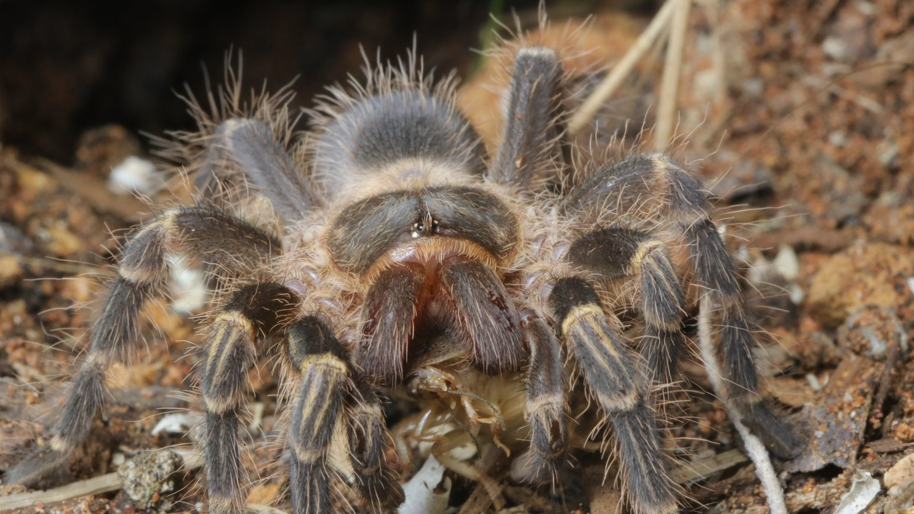
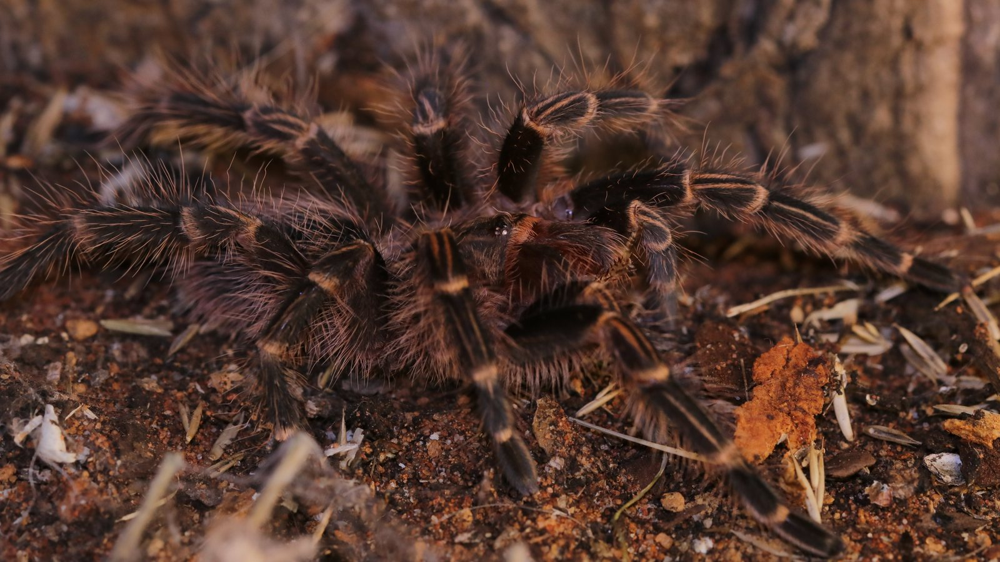
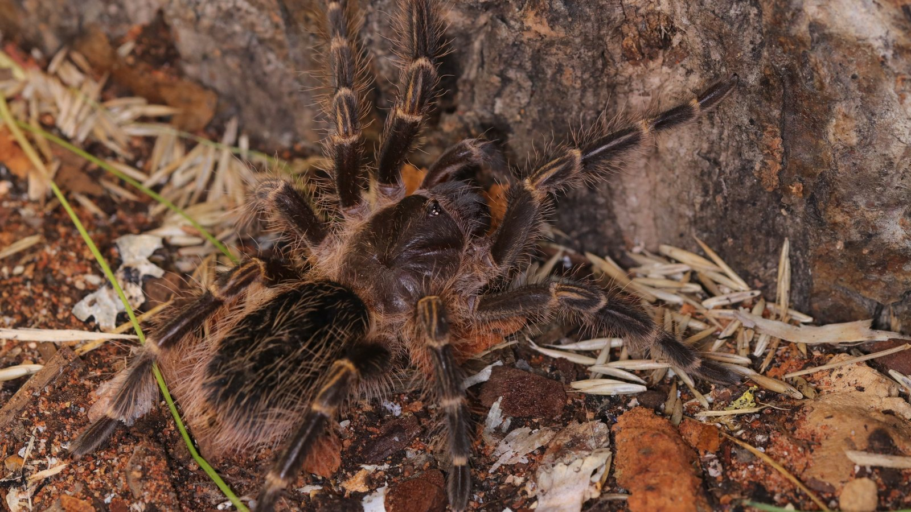

A terrestrial tarantula from southern South America that uses ground-level shelter and may excavate around a retreat. Its heavy build suits a substrate-focused enclosure.
Species profile · Runa
Grammostola pulchripes
Meet Runa
Runa is the Grammostola pulchripes currently in my care. Her portrait is centred on the strong golden knee bands and full-body silhouette.

Scientific nameGrammostola pulchripes
FamilyTheraphosidae
Native rangeBrazil, Paraguay and Argentina
TaxonomyAccepted species
SexConfirmed female
In the wild
Natural history.
Pale golden bands on the legs give the Chaco golden-knee its familiar common name. The markings remain readable from both overhead and lower viewing angles.
This confirmed female has deep substrate, a stable hide, and water. The profile distinguishes routine collection observations from broader published information.
Taxonomy and range
Grammostola pulchripes is an accepted South American theraphosid recorded from Brazil, Paraguay, and Argentina. Regional taxonomic work places Argentine records in comparatively humid landscapes including wet Chaco, eastern Espinal, and northern Yungas, a useful correction to overly simple ‘dry grassland’ summaries.
Burrows, shelter, and activity
This heavy terrestrial spider uses ground-level cover and can excavate around a natural cavity or prepared retreat. The shelter moderates surface conditions and becomes the centre of a relatively small activity area, especially outside mating dispersal.
Feeding ecology
The basic strategy is opportunistic ambush of terrestrial arthropods. Long pauses between visible events are normal for a sit-and-wait predator, and captive appetite can change around premoult, season, temperature, and individual condition.
Defence, senses, and movement
Retreat and stillness are important defences, backed by urticating abdominal hairs when the animal is persistently disturbed. The familiar golden bands make the spider easy to recognise but say nothing about whether handling is safe or useful.
In my care
Meet Runa.
Runa represents Grammostola pulchripes in the current collection. Her recognisable golden leg bands make her easy to follow visually, while the Codex separates personal observations from general species information.



From Instagram
Posts & reels.
From the channel
Related viewing.
Introvertebrates on YouTube
Meet the Chaco golden-knee tarantula up close
A species-focused introduction to Grammostola pulchripes and its distinctive golden bands.
Personal observations
From the Codex.
Introvertebrates Codex
Runa · keeper record
A privacy-safe summary of this resident’s time in care, feeding outcomes, molts, and measurements. These are observations from the Introvertebrates collection, not species-wide averages.
Awaiting a privacy-reviewed Codex export. No invented statistics are shown.
Never published here: raw notes, record IDs, seller or breeder details, enclosure identifiers, local file paths, or exact private event dates.
Continue exploring
Related profiles.


Read further
Sources.
- World Spider Catalog — Grammostola pulchripesView the source.
- Journal of Natural History — Grammostola distribution and habitats in ArgentinaView the source.